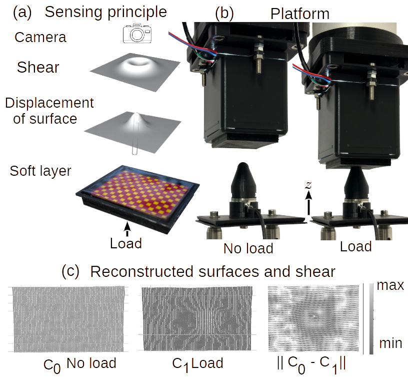

NUSense: Robust Soft Optical Tactile Sensor
Project Date: May 29, 2023
In this project, we explore the use of event-based cameras to improve the performance of high-speed catching tasks with quadrupedal robots. Event-based cameras are specialized sensors that capture changes in the scene asynchronously, enabling faster response times and lower latency compared to traditional frame-based cameras.
Event Preprocessing Summary
The event preprocessing pipeline for DVS (Dynamic Vision Sensor) data converts raw, continuous event streams into a structured, graph-based format suitable for Graph Neural Networks (GNNs). Here’s a summary of each stage:
1. Denoising
Isolated, noisy events are removed by applying a space-time filter. This step eliminates spurious events that don't have nearby events in space and time, improving data quality and reducing the likelihood of overfitting.
2. Time Window Selection
The continuous event stream is divided into small, fixed-duration time windows. Each time window captures the events occurring within that timeframe, effectively segmenting the stream into discrete chunks. Each time window serves as a snapshot, which becomes the basis for creating a separate graph.
3. Sub-sampling and Time Normalization
Within each time window, events are sub-sampled to reduce data density and computational load. Time normalization is then applied to standardize the temporal scale across windows, ensuring consistency in the time representation for each graph.
4. Edge Creation
Events within each time window are connected to form a graph. A radius-neighborhood algorithm creates edges between nodes (events) that are spatially and temporally close within the window. This captures local spatio-temporal relationships among events in that timeframe.
The result is a sequence of graphs, each representing the spatio-temporal structure of events within a single time window. This graph sequence enables the GNN to learn dynamic patterns across time, making it effective for tasks like gesture recognition in event-based vision systems.
Technologies Used
- Event-based Vision Sensors
- ROS (Robot Operating System)
- Python and C++ for Algorithm Development
- Real-time Control Systems
- Machine Learning for Object Detection
Project Gallery